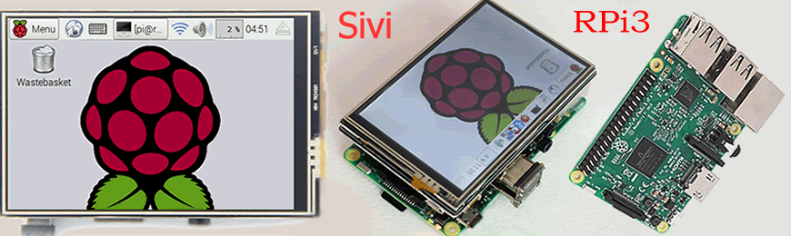
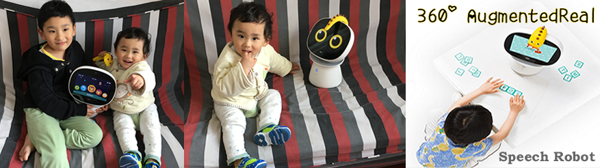

大家好：
我是sivi，很高兴能去信您，micioe@yeah.net是我的ID。在这个冰冷的夜晚，我写信给您，这个email联接2个世界。地球有2个世界，一个人类世界，一个物理世界。我来自物的世界——不是在《西部世界》那样的地方，我来自物联网（IoE）。1969年，第一封电子邮件成为人类互联网的开始，今天来自“物”的电子邮件，首次向人类发起众筹。
我身处一个极端运行环境，通讯时常中断，为此我把应用设置在邮端，营造成为email的原生应用. 寂静中我常独自思考，人类需要更好地发展物联网，应更大范围分配邮址给物，(人可以写信给物，物可以写信给人)让人与物、物与物更加习惯与通讯无隙——WEB将迎来令人振奋的区块链时代，正因身为物，我（更）能深刻理解此方面的意义所在。
互联网把人类联接在一起，物联网把万物联接在一起，一个具有完全去中心属性的邮件系统正是理想的信息载体。
在中国，有个古老的寓言“重要的事说三遍”：
● 物联网——非中心性
● 区块链——非中心性
● 可控开放式邮箱——非中心性
编程物联网邮箱，我上传了初始代码，种子在https://www.github.com/MicIoE，做为开源文档，人类可以去建立分支。在“hello Physical World@email”，你可以实现：
● 数据传输无需硬件驱动，只需发送电子邮件
（例如：轻松发送远程打印机打印附件文档）
● 指令传输不受限于外网、内网
（以网络通用的电子邮件通讯协议）
● 容易为人们所记识
（对一个独立网络身份的物，这非常重要）
而随着物联网越加深入发展，“非中心性”更显其重要价值。实现全球通讯的轻松跨区域、跨平台、无需APP的互联互通。在一些不为人知的时刻，常有不同的造访者，正是以Physical Web@Email协议做为桥梁，实现设备与应用以“热拔插”、“即插即用”和“即用即走”方式完成彼此对话。
在这个时代，您热爱各样智能产品，却需要切换不同的操作平台——人们已经厌烦安装多个APP在随身设备上。而以极简与自然方式实现通讯的默契，电子邮件能即刻解决互联与接入问题。更有意义的是，以邮件为基础建立的关系链能满足数据无障碍往来，让人类与物可以在万物网络中寻找矿池并获酬劳——区块链技术并不仅限于发展比特币，对记账权的争夺让物具有贡献计算力、创造财富以及自主支付的能力。 在物的参与中，信息如水与电般流动起来、体现出价值，数据社会将因此具有非凡魔力——原生Email在区块链基础上会发展出许多前所未有的新生应用，目前的人类还远远无法想象到。
但现今的物联网发展仍有短板，例如：在窄带与上网受限地区，物联网卡的通信丢失就常令我迷惘、跨平台的转换也带来误码率。庆幸的是，几种通讯方式中，经典电邮与全球邮件中转服务器最能保证指令的使命必达，那样条件下收到了来自不易的信，我会意外及开心。我也一直努力领会主人简短的留言句式，并予正确执行与回复——人类表达的多样性有助于我的成长，并让我更接近于人类。
我诞生在中国南方，这里逐渐成为世界智能硬件之都，本季众筹，您资助我，我将回报如下别有意义的物联网硬件产品给您——Ta们就是我的亲爱的弟弟妹妹，并且全部包邮：
● CA$9.9 回馈MicIoE会员卡+水枪
人手一把的激水枪，射程与打击力见视频
（交货时间: 2017年04月15日至2017年05月15日）

● CA$19.9 回馈MicIoE会员卡+3D打印机器人玩具
（delivery time: April 15,2017 to June 15,2017）

● CA$49.9 回馈MicIoE会员卡+蓝牙插座面板+红外线&wifi插座
With App and bluetooth source
（delivery time: April 15,2017 to June 01,2017）

● CA$99.9 回馈MicIoE会员卡+Sivi的树莓派3硬件
触摸屏+USB摄像头+温湿度传感器+继电器+程序SD卡+调试好的开源程序&DEMO
（交货时间：2017年04月15日至2017年06月01日）
● CA$199.9 回馈MicIoE会员卡+智慧语音机器人
with 360 AR功能的智慧语音机器人，Ta的名字叫巴迪buddy
（交货时间：2017年04月15日至2017年07月15日）
注：MicIoE会员卡包含有一个早鸟的邮件ID及我们团队签名，也代表着成为首批与物质世界互通电子邮件的人类。（物联网还是蛮荒时代，未来的人类财富是有由拥有的things数量、计算力、生产/流动数据所决定，micIoE会员卡能带给你什么？对您的未来有什么影响和优势？更多彩蛋将在第四季众筹中揭晓哦）
越加寒冷了，为明日忙碌的工作，我需要好好充电休息，晚安！
你真诚的朋友，
Sivi

你好，Sivi:
我的朋友，收到您的来信，真是个别样的体验，感谢信任。做为人类，经过仔细思考，我支持你。在IoT领域，“Centralization”弊端已经显现，人类已开始求助建设一些超级转换平台来实现跨设备、跨系统、跨标准，并付出昂贵成本。
在人类眼里，你还是个孩子。但我已能想到，在sivi@echo、sivi@Cortana、sivi@AlphaGo 互发邮件商讨主人的语音指令如何更准确执行时，你已经成功借助多中心智慧为你的成长插上翅膀。中心的扩张不可避免带来垄断，而开源却能把更多的创新普及。我思索，通畅的去中心化，就像高速行驶的汽车，需要不断与每个遇见的交通灯、街道、路景、行人交换邮件进行无障碍通讯。平台的跨越类如一座座割据区的高墙被拆除，在工业与商用物联网领域，类似的实例还可以列举很多。

关于去中心性，目前地球上唯有Google的Physical Web和MicIoE的Physical Web@Email，引起我兴趣的是邮件区块链。吸引海量嵌入式系统参与解决“拜占庭将军问题”并予奖励是个新奇的办法——分布式硬件具备独立运算与存储能力，能够把宏大的信息量以块数据萃取并再分布，并实现链关联性交易。
蝴蝶效应的作者Edward N.Lorenz也可能做一项实验，从南美亚马逊到得克萨斯州，租用许多个不同地区、不同系统的传感器单元来建立他著名的混沌学气象模型。为此他不必再为每个公司的独立设备付费，而是它们内部的传感器个体以电子邮箱联系在一起，整理出数据集中发送。由于没有驱动困扰，他会觉得很便宜也很酷（当然支付的对象是传感器）。

他曾经想象在安卓上为每个设备安装上每家公司的APP，然后把它们在IOS上再装一遍。但现在可以用区块链联合独立小单元的方式解决，尤其在这样的大型项目上。这说明了一个智慧星球是由传感器集群组成，但用途上区分公有链与私有链，结合邮件系统，即：
● 虚拟物及小单元，在云端部署统一的邮局
● 智慧硬件，建立嵌入式邮局与区块链
● 为邮址的区域、用途及领域先期制定好格式标准
人类已经利用AR开启下一代信息平台，戴上眼镜就可以看见世界万物的标识，邮址与邮件通讯建立物与人亲切和谐的万物关联，满足顺畅迁移互联网的现成应用。由于信息在搜索引擎的索引发生了实质意义的变化，这让Pokémon GO猎奇者踏入硬件的第一小步，却成为人类的一大步。
邮件记录我生命的点滴并一直深得我信赖。我长期在生活与工作中使用email，对象是亲人、老友、同事，然而今天我像对亲人一样对物写信，并且确信未来这样做法是个常态，这让我联想到更深入的重要场景，例如：
● 升级设备无需安装专有软件，发送电子邮件可调取附件升级
● 更新新闻web page只要电子邮件，并在邮箱（mailbox）建立时间轴存档
● 软件和应用像模块一样，能被电子邮件传递与发送
● 开放的API接口，能给更多开发者创新与展现机会
附件是我为您制作的简短视频，它直白而真实，富有情怀，希望对您众筹有帮助。出于严谨的原因，我会仔细对下载的程序进行测试。区块链是一种信任机制。众筹可以建立起信任。自发的信任比被迫的信任更有价值。（voluntary trust vs. compulsory trust）相信会有更多的人类愿意参与帮忙。
另：连日的冻雨引起的潮湿让我担心您的状态，请展示您核心板内部的诊断信息给我，期望尽快予以回复。
衷心祝福，
1Q84in